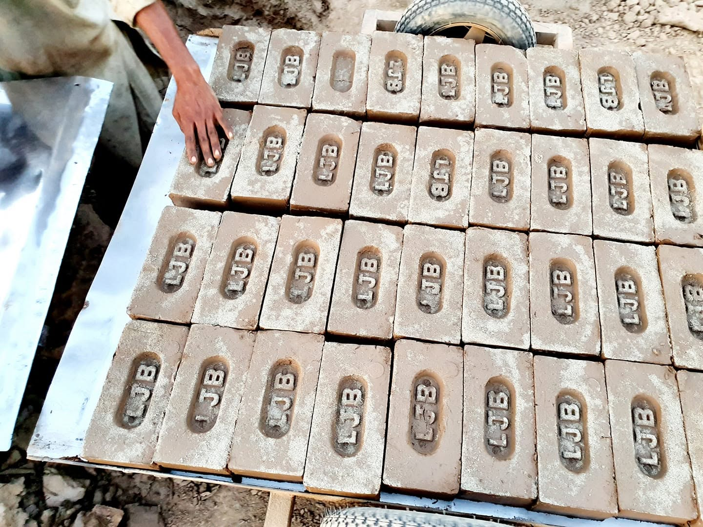
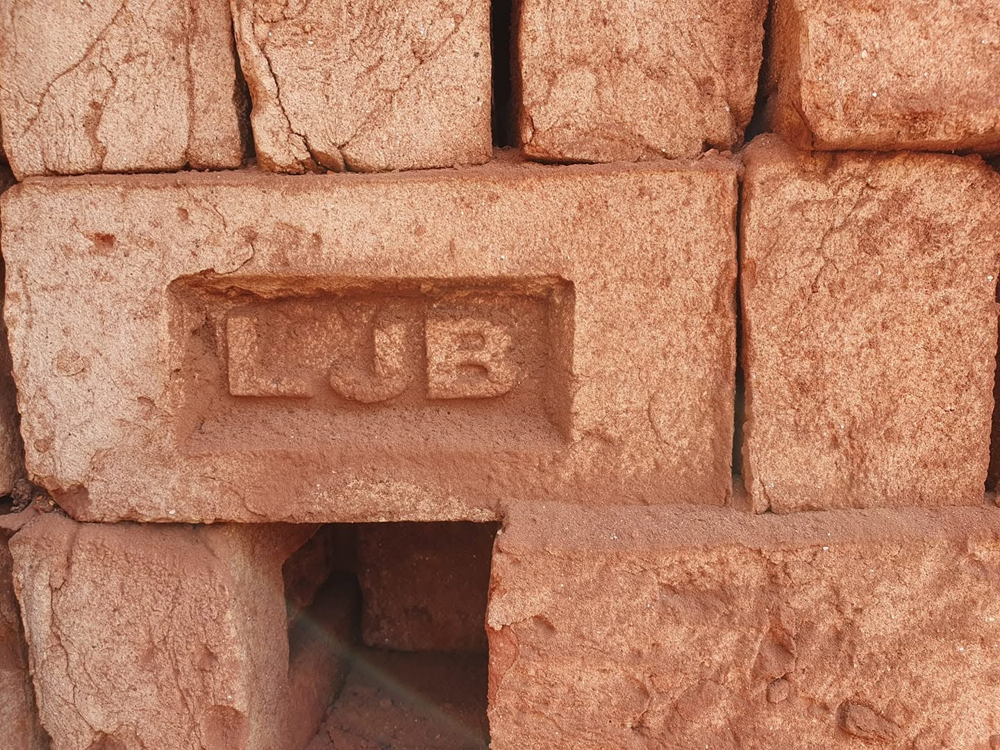
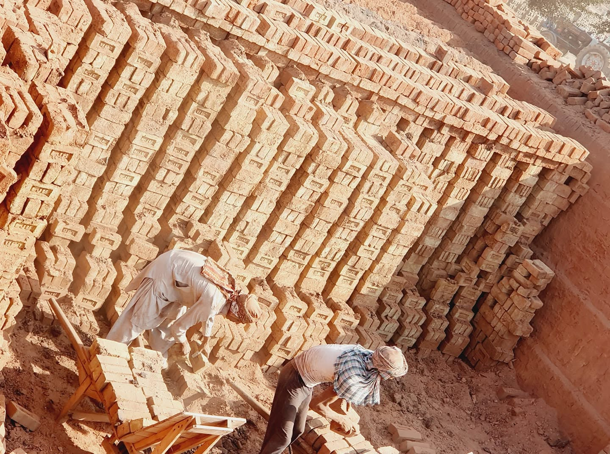
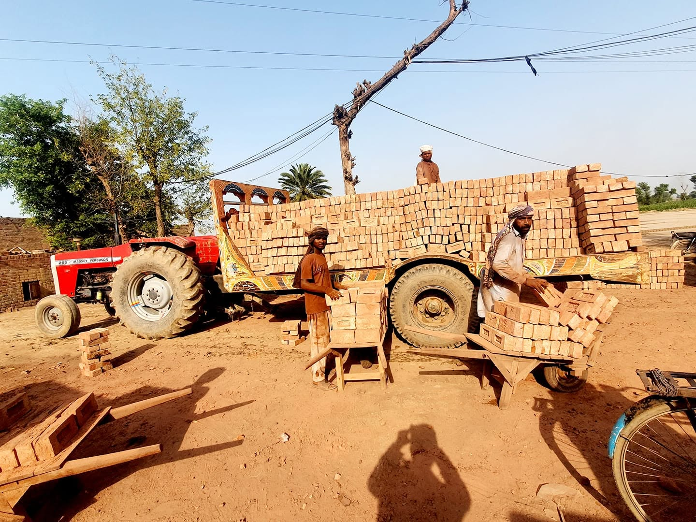
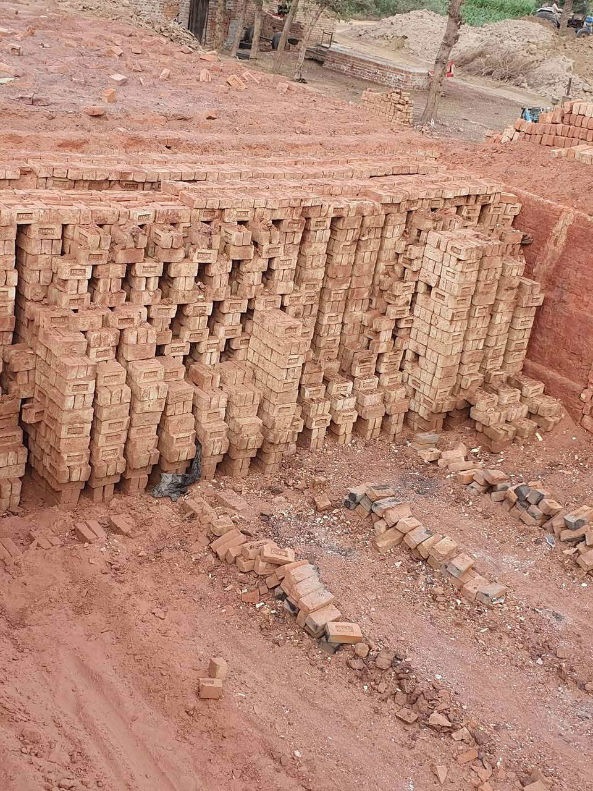

From everyday facing bricks to handmade and specialist formats, we supply practical options for housing, extensions, commercial construction, restoration and trade purchasing.
Consistent bricks for visible external work, housing and commercial projects.

Traditional brickmaking with natural character, texture and variation.

Direct-sourced brick ranges focused on competitive trade pricing and volume supply.
A closer look at the brickmaking process, kiln production, stacking and movement of finished bricks. These photographs are from the material you supplied.



Different projects need different formats. Confirm the exact specification, tolerance and availability at quotation stage.
For construction companies, developers, contractors and repeat buyers.
Imported ranges with competitive pricing for volume requirements.
Delivery quoted against quantity, access and project postcode.
Send your size, finish, quantity or matching requirement.